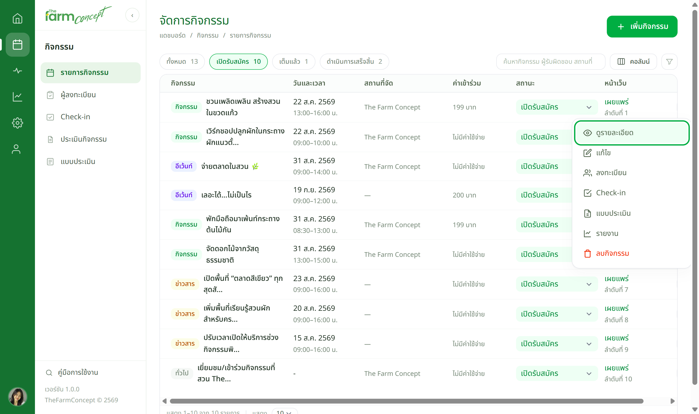
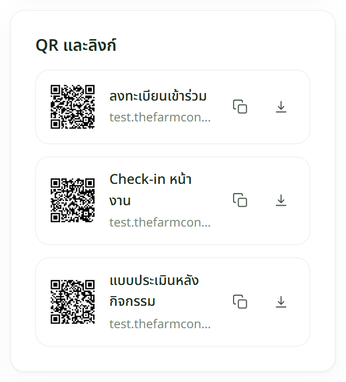
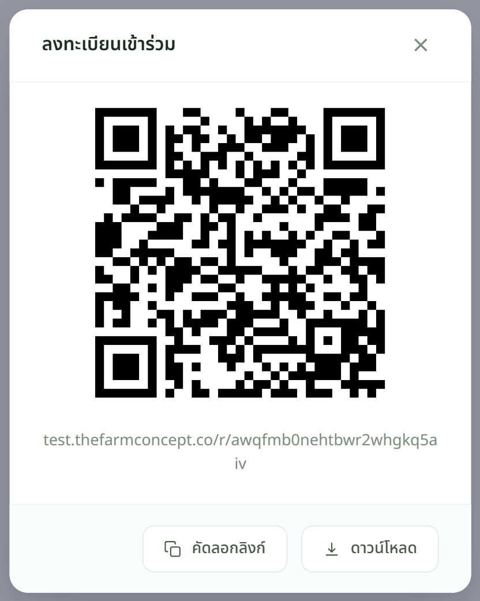

เจ้าหน้าที่
เปิดหน้ารายละเอียดกิจกรรม



ไม่อยากพิมพ์ QR ก็ใช้ คัดลอกลิงก์ แล้ววางในไลน์กลุ่มหรือโพสต์เฟซบุ๊กได้เลย ลิงก์เดียวกัน
QR ทั้ง 3 ชุด ใช้คนละเวลา
| ชื่อ QR | เอาไปติดที่ไหน / ใช้เมื่อไร |
|---|---|
| ลงทะเบียนเข้าร่วม | ก่อนวันงาน — ใบปลิว โปสเตอร์ โพสต์ประชาสัมพันธ์ ให้คนจองที่นั่งล่วงหน้า |
| Check-in หน้างาน | วันงาน — ตั้งไว้ที่โต๊ะลงทะเบียน (หรือเปิดจากจอในระบบก็ได้ ไม่ต้องพิมพ์) |
| แบบประเมินหลังกิจกรรม | ตอนจบงาน — ขึ้นจอ หรือแจกให้สแกนก่อนกลับ |
QR แต่ละชุดผูกกับกิจกรรมนั้นอยู่แล้ว ใช้ข้ามกิจกรรมไม่ได้ — จัดงานใหม่ต้องโหลดชุดใหม่เสมอ
เจอปัญหาให้ทำอย่างไร
| อาการ | ให้ทำ |
|---|---|
| ไม่เห็นกล่อง QR และลิงก์ | กิจกรรมยังเป็นฉบับร่าง — กลับไปเปิดสวิตช์เผยแพร่ในฟอร์มก่อน |
| มี QR ไม่ครบ 3 ชุด | ตอนสร้างกิจกรรมยังไม่ได้ติ๊กขั้นตอนนั้นในส่วนที่ 3 ของฟอร์ม |
| สแกนแล้วขึ้นว่ายังไม่เปิด | ยังไม่ถึงช่วงเวลาที่ตั้งไว้ในหัวข้อ "ช่วงเวลาเปิด–ปิดระบบ" |
| พิมพ์ออกมาแล้วสแกนไม่ติด | ใช้ไฟล์ที่ดาวน์โหลดมาโดยตรง อย่าถ่ายจากหน้าจอ และอย่าย่อให้เล็กกว่า 3 ซม. |